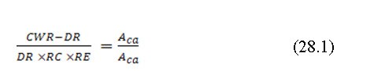
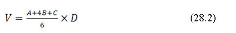

Volume of Dugout Pond = -m3
Total Cost of Construction = Rs. 0/-
Designing Dugout Farm Ponds
The design of farm ponds includes determination of capacity, its location, utilization plan and shape and size.
Catchment and Cultivable Area Ratio:
This ratio is particularly important to determine the optimal size of pond based on the available catchment and the utilization of stored water in the cultivable area. The ratio between catchment (Aca) and cultivable area (Acu) also influenced by runoff coefficient and runoff efficiency factor. This ratio indicates the amount of cultivated area in the total catchment area. This ratio is given as (Critchley et al., 1991):

Where CWR is the crop water requirement, DR is the design rainfall, RC is the runoff coefficient, RE is runoff efficiency factor, Aca is the catchment area and Acu is the cultivable area.
Crop water requirement depend upon the type of crop and location specific climate and can be calculated from standard equations and models.
Runoff coefficient is the runoff to rainfall ratio. It is amount of surface flowover the ground. The coefficient is governed by slope, soil type, vegetation, AMC, and rainfall characteristics (intensity, frequency and duration). Typically this coefficient ranges between 10 to 50%. Larger catchment has lower runoff coefficient than smaller catchment (1-5 ha). The runoff coefficients are site specific and should be determined locally.
Efficiency factors address the issue of uneven distribution of the runoff water within the field. The uneven distribution occurs due to differential infiltration and percolation and surface depression. When the cultivated area is leveled and smooth, the efficiency is higher. Generally micro- catchment systems have higher efficiency. The efficiency can be determined using the graphical relationship between runoff efficiency and catchment area
The basic principle of design is to produce a satisfactory functional structure at a minimum cost. To minimize the cost, the pond should be designed for its maximum utilization considering the three strategies for irrigation particularly in rainfed agriculture
Depth and Side Slope The depth of the farm pond is decided by considering soil depth, soil type and equipment used in excavation. Though, the evaporation loss component can be minimized by increasing the depth but, from practical point of view the ideal depth is limited to 3 to 3.5 meter. Any depth beyond 4.0 meter will be uneconomical if human labour is employed in excavation. Based on experience, it is observed that the side slope of the pond should not be steeper than the natural angle of repose of the excavated material. Table 28.1 presents the recommended side slope of farm pond for different soil as suggested by Critchley et al. (2011). Another factor while considering the side slope is duration of standing of water in the farm pond. For higher duration, flatter side slope is recommended to avoid the slippage due to saturation particularly for unlined pond.
| Soil Type | Slope (horizontal:vertical) |
| Clay | 1:1 to 2:1 |
| Clay loam | 1.5:1 to 2:1 |
| Clay loam | 2:1 to 2.5:1 |
| Sandy | 3:1 |
The volume of the farm pond can be determined using eq. as follows:
Where, is volume of exacavation (m3); is the area of excavation at ground surface (m2), is the area of exacavation at mid-depth point (D/2) (m2); C is the area at the bottom of the pond (m2) and D is the design depth (m).